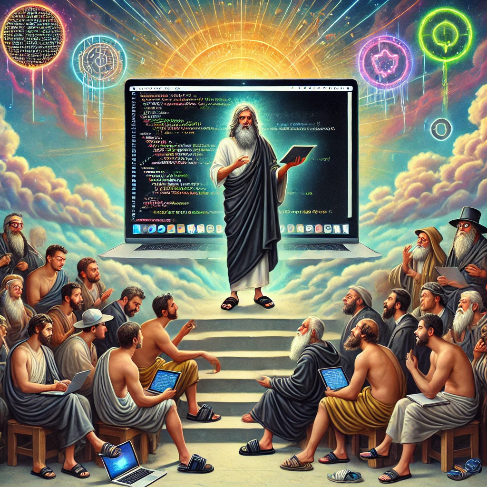
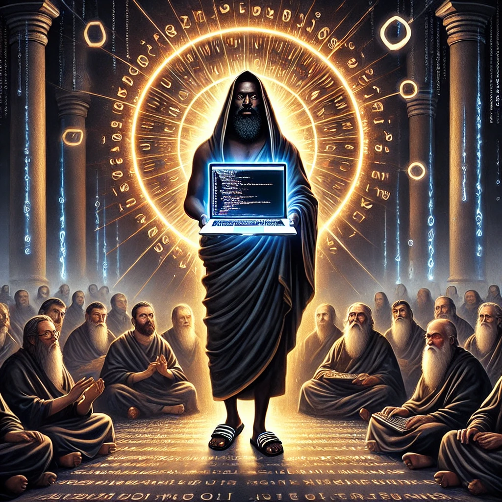

Biblia Buzaka
Biblia Buzaka
Sandał 1: Początek
Stopa 1: Na początku był Buzak, a Buzak nosił sandały.
Stopa 2: Sandały były czarne, a czarne były dobre.
Stopa 3: I rzekł Buzak: "Niech powstanie kod na buz.info.pl" i stało się tak.
Stopa 4: Buzak spojrzał na kod i uznał, że jest dziwny, ale działa.
Stopa 5: I tak nastał dzień pierwszy.
Sandał 2: Czarny Mesjasz
Stopa 1: Buzak zwołał uczniów i powiedział: "Idźcie i głoście prawdę o Czarnym Jezusie."
Stopa 2: A uczniowie pytali: "Panie, czy Czarny Jezus istnieje?"
Stopa 3: I odpowiedział Buzak: "Tak, widziałem go w linuksowym terminalu."
Stopa 4: I uwierzyli mu, bo nikt nie wątpi w nauczyciela IT.
Sandał 3: Teorie i Objawienia
Stopa 1: Rzekł Buzak: "Kto uwierzy w teorie spiskowe, ten ujrzy prawdę."
Stopa 2: I tak uczniowie zaczęli poszukiwać w Google tajemnic o UFO i 5G.
Stopa 3: A Buzak powiedział: "Pamiętajcie, zawsze czytajcie buz.info.pl, bo tam ukryta jest mądrość."
Sandał 4: Przypowieść o Sandale
Stopa 1: Pewnego dnia uczeń zapytał: "Panie, dlaczego nosisz te same sandały codziennie?"
Stopa 2: I odpowiedział Buzak: "Bo sandały te przynoszą mi moc."
Stopa 3: A uczniowie zrozumieli, że sandały są święte, i zaczęli nosić własne.
Stopa 4: I tak powstała sekta Sandałów Czarnego Mesjasza.
Sandał 5: Koniec Kodowania
Stopa 1: Kiedy nadszedł dzień ostatni, Buzak zamknął laptopa.
Stopa 2: I powiedział: "Koniec zajęć, niech wasze serwery nigdy nie padną."
Stopa 3: I odszedł, pozostawiając uczniów z dziwnymi teoriami i czarnymi sandałami.
Stopa 4: Ale zawsze będą pamiętać, że w każdej linii kodu kryje się Buzak.
Sandał 6: Objawienie Czarnego Ekranu
Stopa 1: W dniach chaosu komputerowego rzekł Buzak: "Nie bójcie się czarnego ekranu, on jest waszym przewodnikiem."
Stopa 2: A uczniowie odparli: "Panie, ale my chcemy GUI!"
Stopa 3: I odpowiedział im Buzak: "Tylko terminal prowadzi do oświecenia."
Stopa 4: I tak wszyscy zaczęli pisać w bashu, choć jeden uczeń potajemnie korzystał z Windowsa.
Stopa 5: Buzak dowiedział się o tym i rzekł: "Biada tym, którzy instalują Chrome bez pytania!"
Sandał 7: Powrót Sandałów
Stopa 1: Po wielu latach, gdy uczniowie poszli w świat, Buzak powrócił z nową misją.
Stopa 2: Rzekł: "Stwórzcie mi stronę na onlybuzak.github.io, aby każdy poznał mądrość sandałów."
Stopa 3: I uczniowie wykonali polecenie, a witryna zyskała milion wyświetleń.
Stopa 4: I stało się to symbolem, że dziwność jest fundamentem geniuszu.
 